Section 2: Historical Perspectives on Wilderness
Justin Leinaweaver (Fall 2026)
A Spectrum of Environments (Nash 2014)
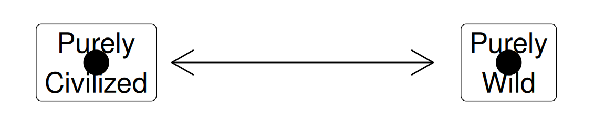
We have a duty to foster and protect wildness all around us (Cronon 1996)
Edenic Narratives
Sublime Narratives
Utility Narratives
Holistic Narratives
The narratives can help you unlock problem-solving!
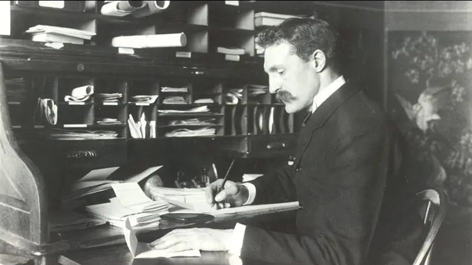
Pinchot, G. (1910). The Fight for Conservation.
Spirn, A. (1996). “Constructing Nature: The Legacy of Frederick Law Olmstead.” Uncommon Ground.
Hendee, J., Stankey, G. & Lucas, R. (1978). Wilderness Management. US Department of Agriculture.
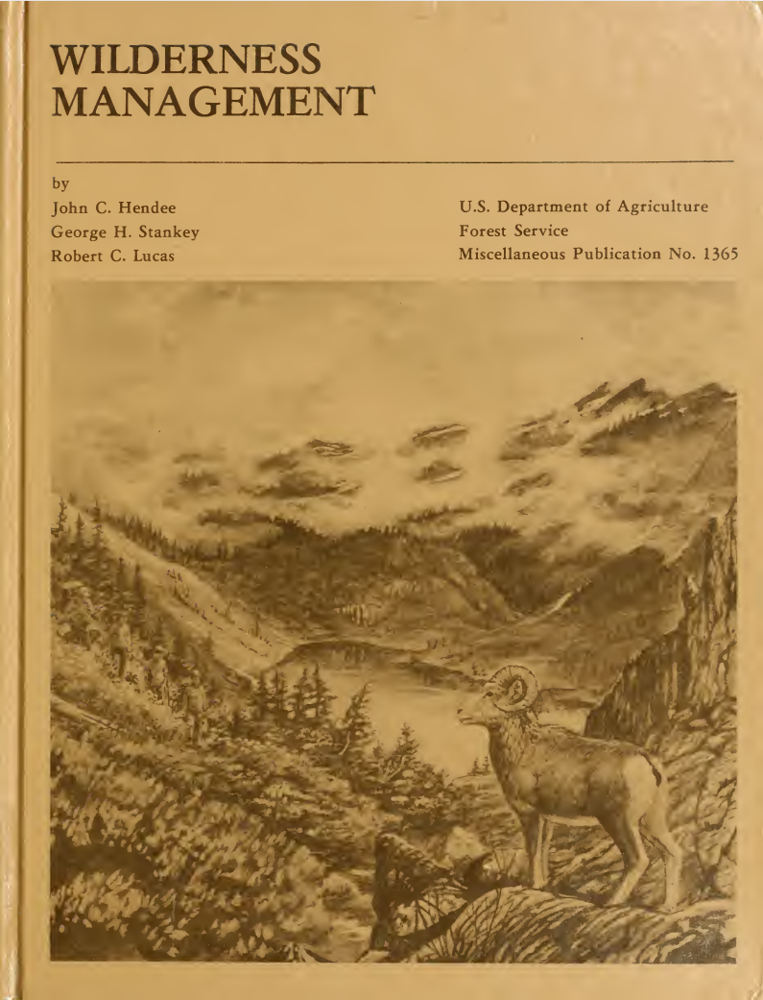
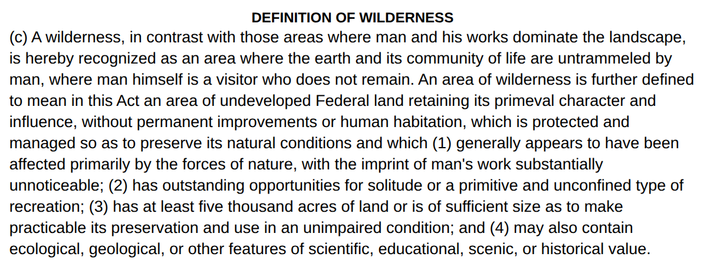
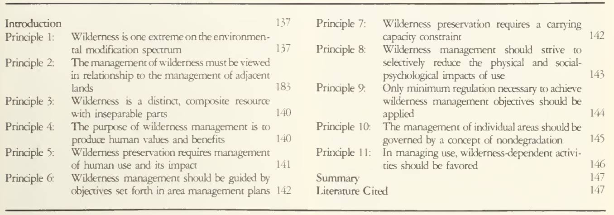
The Utility Narrative of Wilderness
Defines wilderness in rather sublime terms, but…
Sees value in its sustainable use to improve human lives in the immediate term
Concentrated Animal Feeding Operations (CAFO)
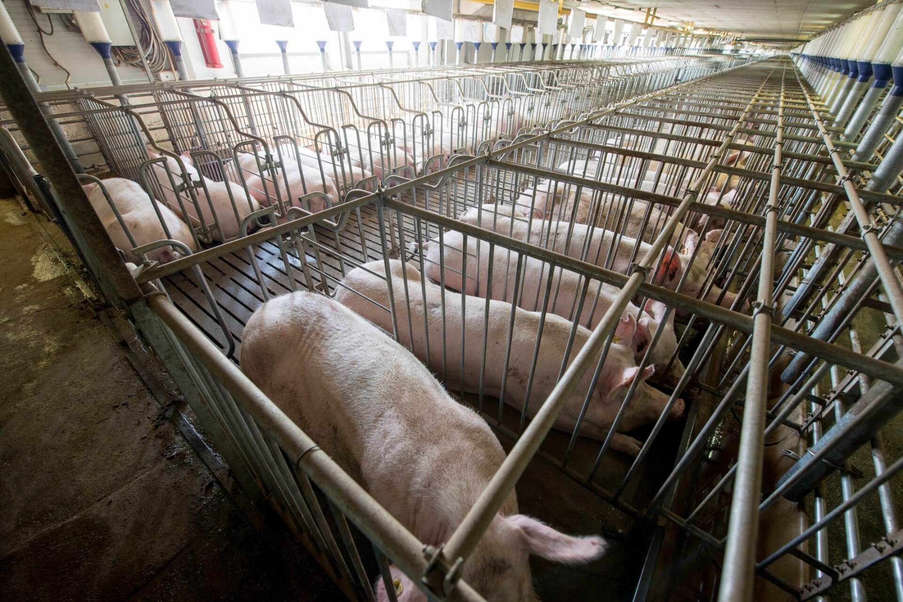
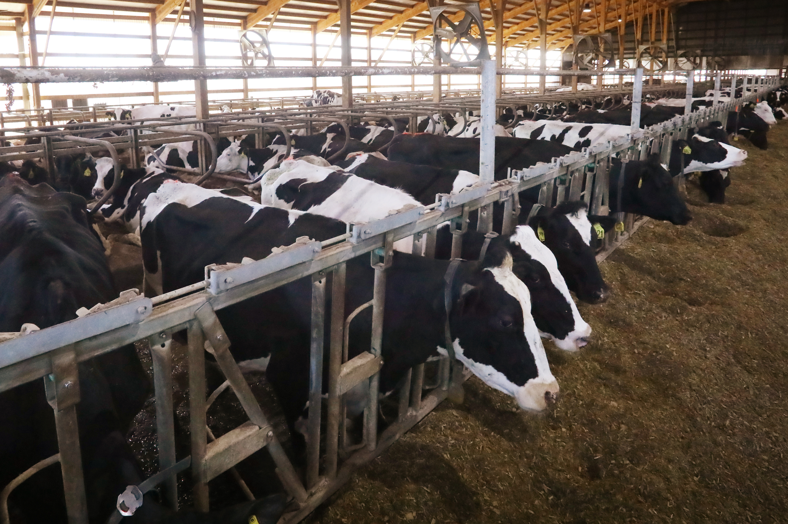
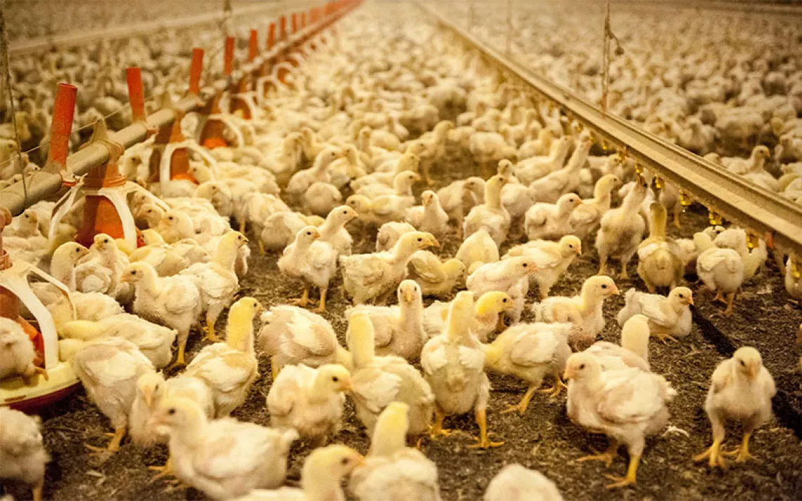
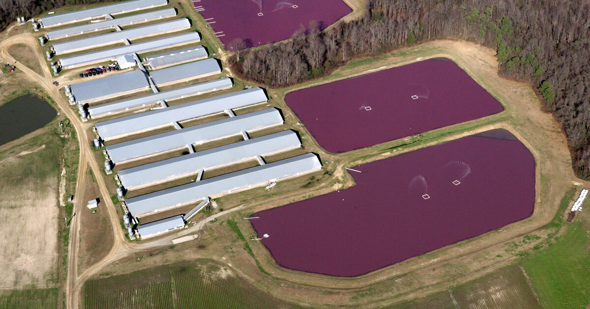
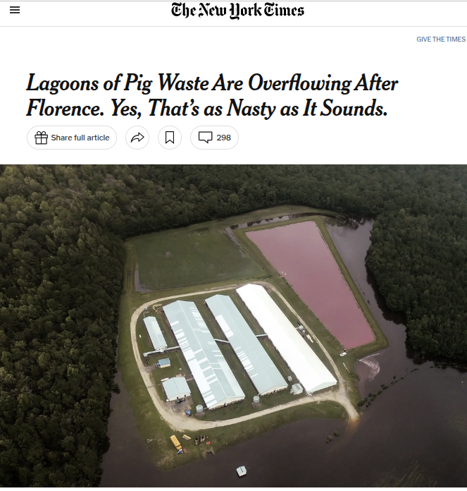
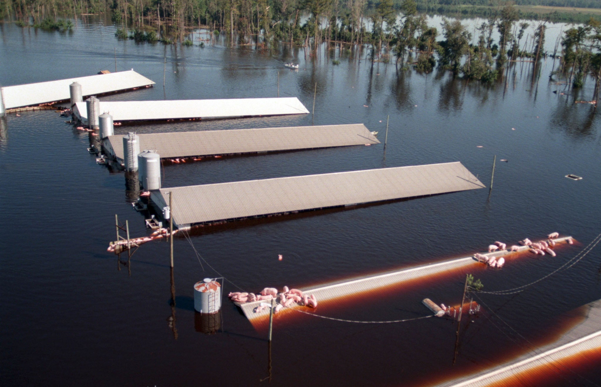
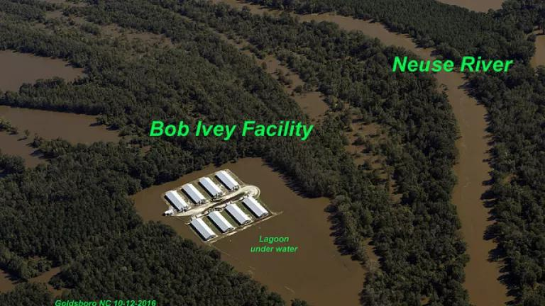
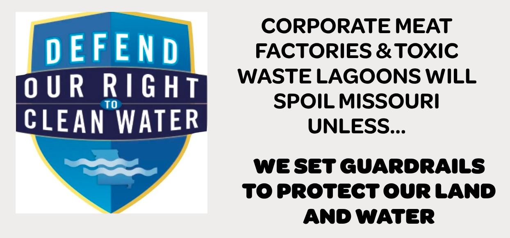
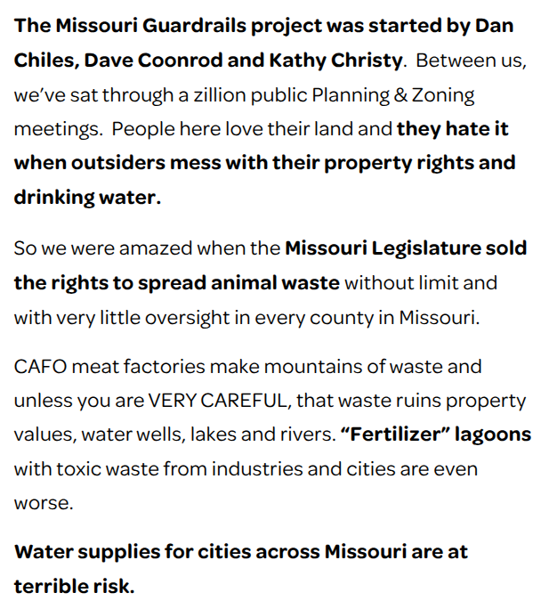
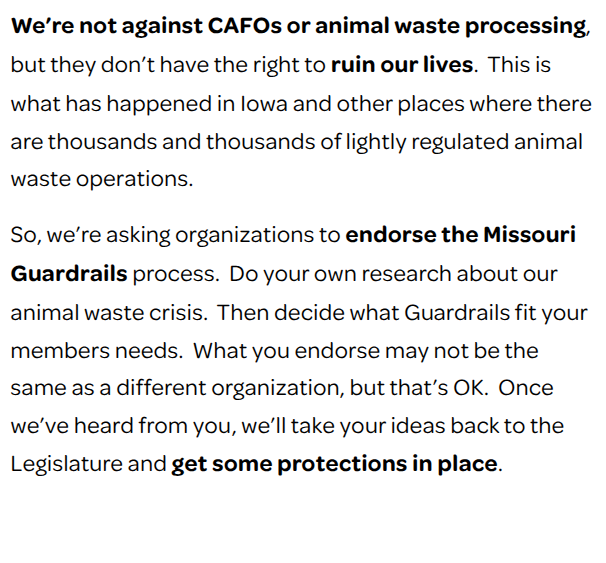
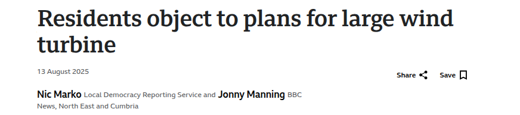
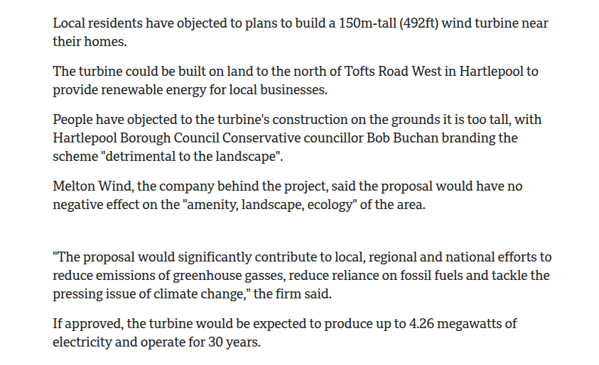